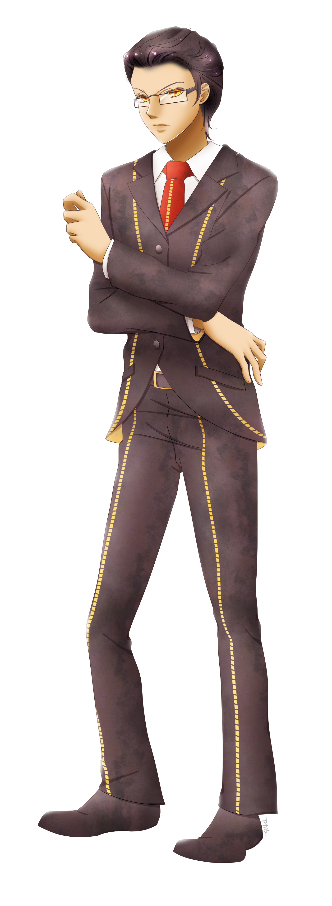
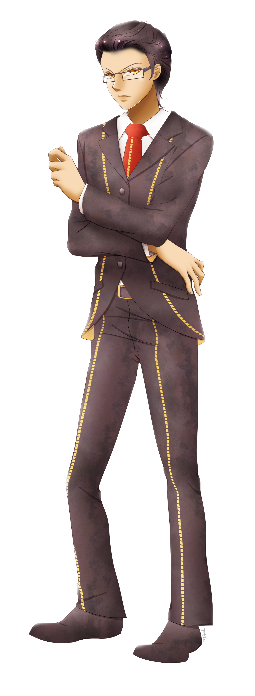

Daeon Liàng
name: Daeon Liàng
age: 19
date of birth: 12/17
hair color: jet black
hair style: long, but slicked back
skin tone: tan
eye color: gold
height: 6 ft
ethnicity/race: Chinese descended
citizenship: Tŏngī Kōtei-fū
key attribute: cold brilliance
right-handed
body type: tall and slim
Character Bio/Personality:
Daeon is above all else professional. He has a keen analytic mind, sharpened by years of maintaining a staggering dominance in his
classes at the cost of his eyesight, requiring the use of glasses. Daeon has successfully transitioned his mental capabilities to
financial gain and has, at the young age of 19, become one of the wealthiest people in his country. Daeon is a cold individual:
he doesn't smile, he doesn't raise his voice, and he constantly looks for the dark lining to any silver clouds. He keeps his dark
hair slicked back, so people tend to be surprised when they find out how long it actually is.